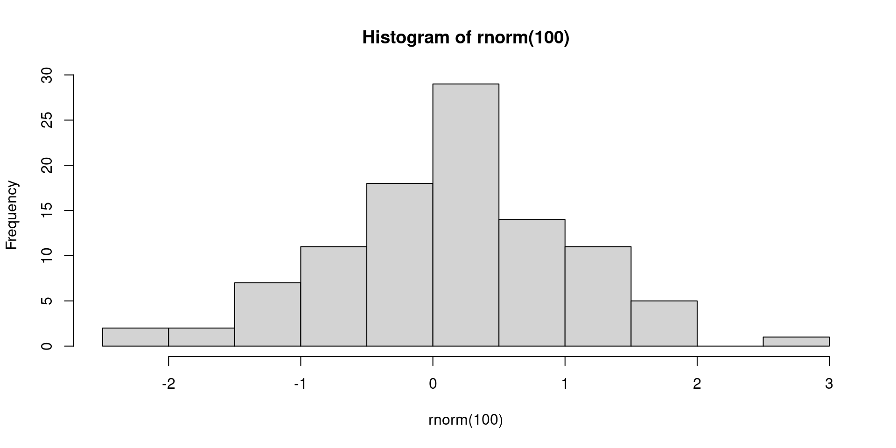

[1] 310 Reproducibility
openstatsware Workshop: Good Software Engineering Practice for R Packages
April 18, 2024
Acknowledgments
This section is based on and adapted from great (Quarto) slides by Louisa Smith, see her course website R Bootcamp (EPI590R) from Northeastern University.
Thanks a lot Louisa!
Overview
- Literate programming: Quarto
- Package environment:
renv - Exercise on how to use them together
Literate Programming: Quarto
What is Quarto?
- Format of a book or pamphlet produced from full sheets printed with eight pages of text, four to a side, then folded twice to produce four leaves (Wikipedia)
- An open-source scientific and technical publishing system (Quarto.org)
- Integrates text, code, and output
- Can create multiple different types of products (documents, slides, websites, books)

Why not R Markdown?
Only because Quarto is newer and more featured!
- Almost everything you already know how to do in R Markdown you can do in Quarto, and more!
- See a comparison here
- All of these slides, website, etc. are all made in Quarto.
- If you know and love R Markdown, you can keep using it
- There are no plans for deprecation of R Markdown
Quarto workflow
- Create a Quarto document
- Write code (in R, Python, Julia, or Observable JavaScript)
- Write text (with markdown syntax)
- Repeat 2-3 in whatever order you want
- Render
How does the rendering work?
knitrprocesses the code chunks, executes the R code, and inserts the code outputs (e.g., plots, tables) back into the markdown documentpandoctransforms the markdown document into various output formats

Text and code…
… becomes …
My header
Some text
Some italic text
Some bold text
- Eggs
- Milk
R chunks
Everything within the R chunks has to be valid R.
Chunks run in order, continuously, like a single script.
YAML
At the top of your Quarto document, a header written in yaml describes options for the document:
There are a ton of possible options (more below), but importantly, this determines the document output.
Output

Chunk options
For example, to suppress the code printing:
#| echo: false tells knitr to exclude the source code from the output.
Chunk options
Additional chunk options which are often used:
#| eval: false: Don’t evaluate this chunk! Just print the code.#| error: true: Render this even if the chunk causes an error.#| warning: false: Don’t print warnings.#| include: false: Suppresses all output from the code block.#| cache: true: Useknitrcaching mechanism for this chunk.
Document options
You can tell the entire document not to evaluate or print code (so just include the text!) at the top:
Careful! YAML is really picky about spacing.
Document options
There are lots of different options for the document.
- For example, you can choose a theme:
- Remember the pickiness: when you have a format option,
html:moves to a new line and the options are indented 2 spaces
Chunks can produce figures and tables
| mpg | cyl | disp | hp | drat | wt | qsec | vs | am | gear | carb | |
|---|---|---|---|---|---|---|---|---|---|---|---|
| Mazda RX4 | 21.0 | 6 | 160 | 110 | 3.90 | 2.620 | 16.46 | 0 | 1 | 4 | 4 |
| Mazda RX4 Wag | 21.0 | 6 | 160 | 110 | 3.90 | 2.875 | 17.02 | 0 | 1 | 4 | 4 |
| Datsun 710 | 22.8 | 4 | 108 | 93 | 3.85 | 2.320 | 18.61 | 1 | 1 | 4 | 1 |
Chunks can produce figures or tables
Figure 1: This is a histogram
Cross-referencing
You can then refer to those with @tbl-one and @fig-hist and the Table and Figure ordering will be correct (and linked)
@fig-hist contains a histogram and @tbl-one a table.gets printed as:
Inline R
Along with just regular text, you can also run R code within the text:
There were `r 3 + 4` participantsbecomes:
There were 7 participants
Inline stats
You might want to create list of stats that you want to report in your manuscript:
I can then print these numbers in the text with:
There were `r stats$n` participants with a mean age of `r stats$mean_age`.
which turns into:
There were 1123 participants with a mean age of 43.5.
Package Environment: {renv}
What is {renv}?
{renv} is an R package for managing project dependencies and creating reproducible package environments.

Benefits of using {renv}
- Isolation: Installing a new or updated package for one project won’t break your other projects, and vice versa. That’s because
{renv}gives each project its own, private, library of R packages. - Reproducibility:
{renv}records the exact package versions you depend on, and ensures those exact versions are the ones that get installed wherever you go. - Portability: Easily transport your projects from one computer to another, even across different platforms.
{renv}makes it easy to install the packages your project depends on.
Getting Started with {renv}
Install
{renv}(only once):Initialize a project (only once):
Install packages:
Track dependencies via a “lockfile”:
Behind the scenes
Your project
.Rprofileis updated to include:This is run every time R starts, and does some management of the library paths to make sure when you call
install.packges("package")orlibrary(package)it uses the private libraryAn
renv.lockfile (really just a text file) is created to store the names and versions of the packages. This is the “lockfile” mentioned above.
renv.lock
{
"R": {
"Version": "4.3.0",
"Repositories": [
{
"Name": "CRAN",
"URL": "https://cran.rstudio.com"
}
]
},
"Packages": {
"R6": {
"Package": "R6",
"Version": "2.5.1",
"Source": "Repository",
"Repository": "CRAN",
"Requirements": [
"R"
],
"Hash": "470851b6d5d0ac559e9d01bb352b4021"
},
base64enc": {
"Package": "base64enc",
"Version": "0.1-3",
"Source": "Repository",
"Repository": "CRAN",
"Requirements": [
"R"
],
"Hash": "543776ae6848fde2f48ff3816d0628bc"
},Using {renv} later
Restore an environment:
Install new packages:
Update the lockfile:
Collaboration with {renv}
Share the project’s
renv.lockfile with collaborators to ensure consistent environments- With
git, you’ll need to commitrenv.lock,.Rprofile,renv/settings.jsonandrenv/activate.R. This is particularly simple because{renv}will create a.gitignorefor you, and you can just commit all suggested files.
- With
When they run
renv::restore(), the correct versions of the packages will be installed on their computer
Other helpful functions
Remove packages that are no longer used:
Check the status of the project library with respect to the lockfile:
This will tell you to
renv::snapshot()to add packages you’ve installed but haven’t snapshotted, orrenv::restore()if you’re missing packages you need but which aren’t installed.Update packages which are out-of-date (only checked from their original source):
Package Development with {renv}
Install all of your package’s dependencies as per
DESCRIPTIONfile:If you need to test your package with other development versions, use
Remotesfield and a project specific library:In order to avoid
R CMD buildperformance hit, by default,{renv}will create a package project specific library outside of the directory.- Exact location may be controlled with environment variable
RENV_PATHS_LIBRARY_ROOT
- Exact location may be controlled with environment variable
Package Development with {renv} (cont’d)
- Continuous integration (CI) is well supported
Basic idea is to
renv::restore()the package environment on the CI machine, and use provided cache as best as possibleExample: GitHub Actions (details are given here)
- Ignore the
{renv}lockfile and the package folder when building the tarball for CRAN submission{renv}should automatically edit.Rbuildignoreaccordingly, just good to double check
Conclusion
{renv} benefits are isolation, reproducibility, and portability.
Getting started with {renv}:
- Initialize a project using
renv::init(). - Install packages and then save with
renv::snapshot(). - Restore later or elsewhere with
renv::restore().
Exercise
Exercise 1: Create a Quarto Project with {renv}
- Create a new Quarto project via File > New Project > New Directory > Quarto Project in RStudio.
- Enable the use of
{renv} - Create Project
- Write a short introduction and perform a simple analysis
- Render the document
Exercise 2: Use {renv} for dependencies
Add any additional R packages your analysis needs:
Check
renv::status()and the lockfile - did anything change?Now use the additional R package in your Quarto document:
Check the status again and record the state with
renv::snapshot()Close the project and confirm that the package is not available anymore
Open the project and confirm that the package is available
License Information
- Creators (initial authors): Louisa Smith , see her course website R Bootcamp (EPI590R) from Northeastern University
- In the current version, changes were done by (later author): Daniel Sabanes Bove
- This work is licensed under the Creative Commons Attribution-Noncommercial 4.0 International License.
- The source files are hosted at github.com/RCONIS/workshop-r-swe-zrh, which is forked from the original version at github.com/openpharma/workshop-r-swe-mtl.
- Important: To use this work you must provide the name of the creators (initial authors), a link to the material, a link to the license, and indicate if changes were made